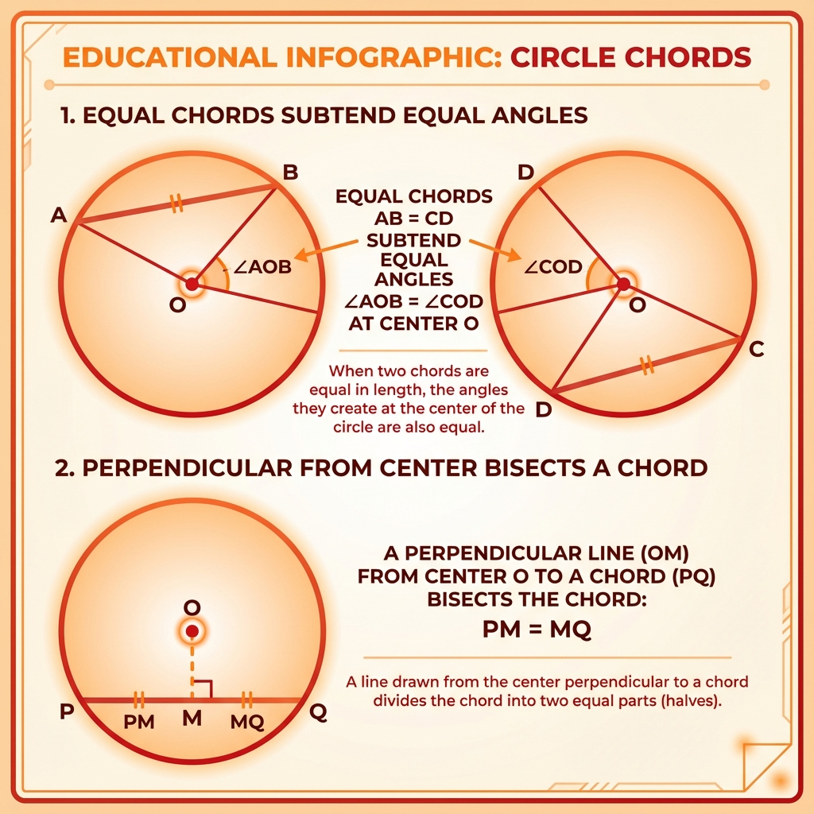
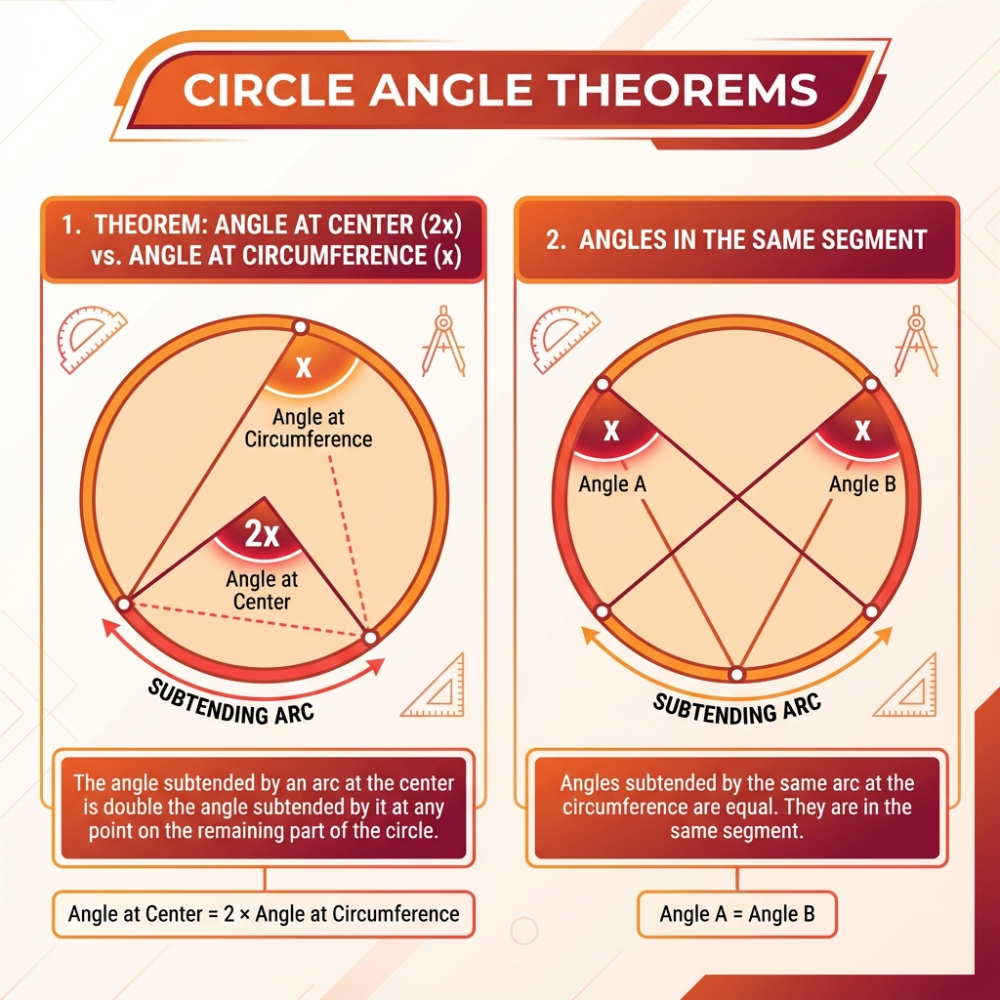
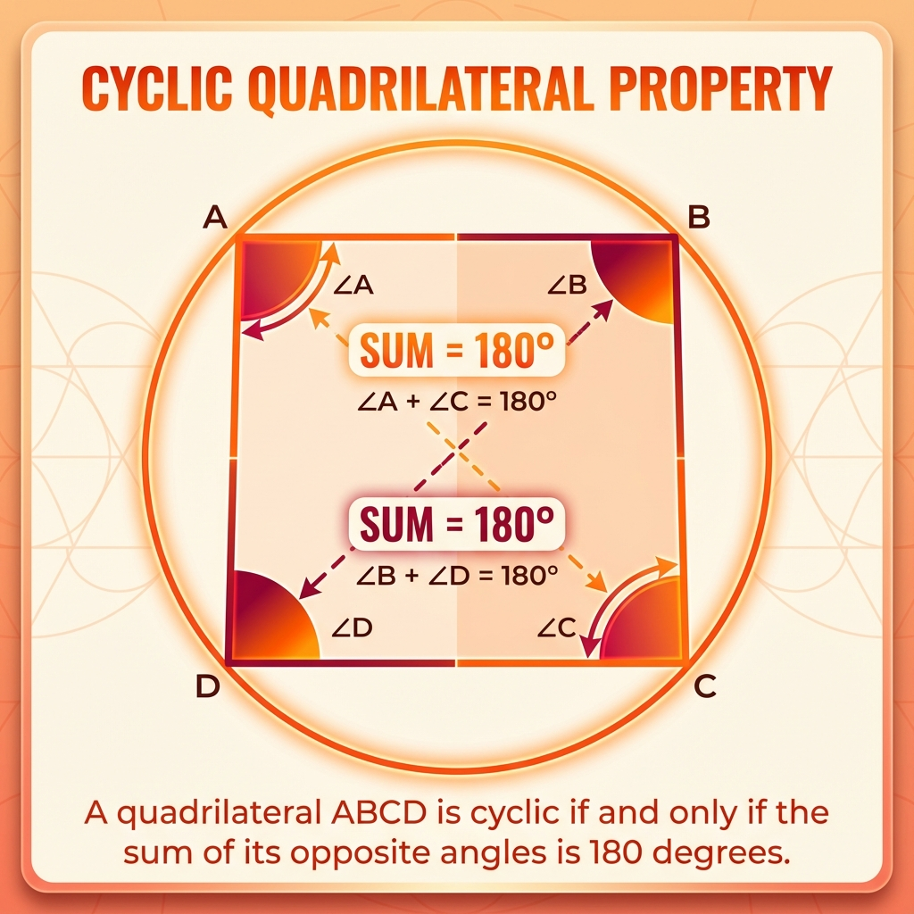

1. Chords & Center Properties
Chord (Jiva) ek line segment hai jo circle ke andar do points ko jodti hai. Diameter sabse badi chord hai.
Imagine karo ek Pizza. Agar tum crust (kinaare) par do equal length ke cuts lagao (Equal Chords), toh jo slice banegi uska angle center par bilkul same hoga.
Matlab: Equal Chords = Equal Angles at Center.
Theorem: Equal chords of a circle subtend equal angles at the center.
Proof:
Triangle AOB aur Triangle COD mein (jahan AB aur CD equal chords hain):
- OA = OC (Radii/Trijya of same circle)
- OB = OD (Radii)
- AB = CD (Given)
So, by SSS Rule, Triangles congruent hain.
Isliye, Angle AOB = Angle COD (CPCT).
Ek teer-kaman (Bow and Arrow) socho. Kaman ki dori ek chord hai.
Jab tum teer ko center se khinchte ho (Perpendicular), toh wo dori ko do barabar hisson mein baant deta hai (Bisect).
Theorem: The perpendicular from the center of a circle to a chord bisects the chord.
📊 Visual Summary: Chords

2. Angles Subtended by Arc
Ye theorem Circles ka sabse important rule hai.
Theater mein screen (Arc) wahi rehti hai. Lekin agar tum front row (Center) mein baitho, toh screen bahut badi (wide angle) dikhti hai.
Agar tum piche wali row (remaining part of circle) mein baitho, toh screen choti dikhti hai.
Relation ye hai: Center ka angle exactly Double (2x) hota hai piche wale angle se.
Theorem: The angle subtended by an arc at the center is double the angle subtended by it at any point on the remaining part of the circle.
Logic for Proof:
Triangle ke exterior angle property ko use karke hum dikha sakte hain ki Center wala angle radius ke saath judkar double ho jata hai.
Football ground mein goal post (Arc) same hai. Player boundary par kahin bhi khada ho jaye (same segment), use goal post ka "width" (angle) same hi dikhega.
Theorem: Angles in the same segment of a circle are equal.
📊 Visual Summary: Angles

3. Cyclic Quadrilaterals
Ek aisa 4-sided figure jiske chaaron corners circle ko touch karte hain.
Ek round table meeting mein jo log aamne-saamne baithte hain (Opposite Angles), unka "Sum" hamesha fixed hota hai.
Property: The sum of either pair of opposite angles of a cyclic quadrilateral is 180°.
Agar Angle A + Angle C = 180° hai, toh quadrilateral Cyclic hai.
📊 Visual Summary: Cyclic Quadrilateral

📌 Chapter Complete!
Badhai ho! Aapne Class 9 Geometry ka major portion cover kar liya hai. Ab bas problems practice karo!